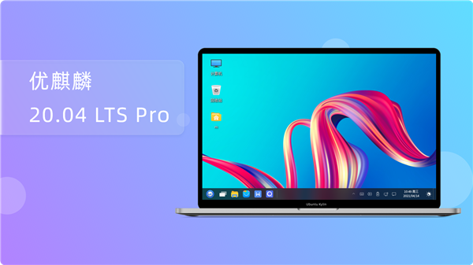

Ubuntu Kylin 20.04 LTS Pro is released Significantly improve system stability

Ubuntu Kylin is equipped with the latest Linux 5.10 LTS kernel by default. It also adds 9 new applications including self-developed Kirin Music, Kirin Recording, Kirin Camera, Kirin Desktop Installer, Kirin Bluetooth, Kirin Book, Kirin U Disk Launcher, Kirin Calculator and Kirin Scan.
By further optimizing the animation effect and reconstructing the theme frame control style, it brings a more cool and unified visual experience. At the same time, the default integration of 26 CVE vulnerability repair patches, repair a large number of known problems in the desktop environment and application software, greatly improve the stability and security of the system, so as to provide users with a more efficient and stable use experience.
New kernel upgrade
Integration with the latest Linux 5.10 LTS kernel brings many enhancements and additional device support. At the same time, Linux 5.4LTS version kernel is provided. Users can choose any version of kernel to experience on the GRUB interface, so as to meet user needs in more scenarios and further improve the compatibility of the system.
Linux 5.10 LTS Important Update:
Support for Soundblaster AE-7;
Nintendo Switch Joy Cons and Pro controllers;
Support for the Sega Saturn controller;
Hardware monitoring support for AMD Zen3 processors;
Multi-touch support for trackpoints and buttons on the Lenovo X1 Tablet;
Provide mature support for the upcoming USB 4 specification;
Tiger Lake GPU improvements;
Update the way
The 20.04 LTS Pro version can now be downloaded and installed by Unicorn users and other Linux enthusiasts via Unicorn's official website or mirroring site.
1. Download and install through the official website.
www.ubuntukylin.com/downloads/
Kirin Desktop Setup Note:
1) Please pay attention to backup important data for multi-system installation;
2) Windows users need to turn off BitLocker when installing multiple systems;
3) No support for encryption and logical volumes;
4) Setting the user name reserved for the system (such as root) is not supported;
5) If installation fails, enter trial mode and install by selecting the Ubiquity program from the Start menu.
2. Users who have installed the official version of 20.04 and 20.04.1 will upgrade directly.